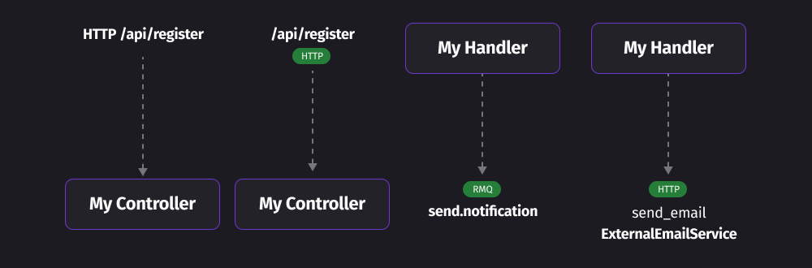

Я, как технический директор, регулярно сталкиваюсь с необходимостью обсудить с командой архитектуру нового приложения или микросервиса. И в рамках таких обсуждений я понял, что не существует единого подхода, который позволил бы эффективно общаться команде, обсуждая архитектурные решения.
Понятно, что на словах это не объяснишь и приходится прибегать к дополнительным инструментам в виде доски и маркера или же при текущих реалиях - online доски типа Miro. Но даже в этом случае обсуждение сваливается в хаотично нарисованные квадратики, круги или прямоугольники с текстом, как-то соединённые стрелками.
При этом от обсуждения к обсуждению одна и так же схема может быть нарисована 1000 разными способами. Кто-то в творческом порыве начинает рисовать иконки пользователей или серверов, а кто-то рисует поток из 10 стрелок, чтобы показать все возможные варианты взаимодействия. И это - не эффективная коммуникация, где одно и тоже можно понять по-разному при этом потратив какое-то время на пояснение чем шестиугольник отличается круга.
Осознав проблемы я первым делом начал искать готовые варианты. Вот несколько из них:
Потому после нескольких экспериментов, я решил подготовить простую нотацию, которая позволит описать архитектуру приложений на том уровне, чтобы мы могли:
Перед тем, как переходить к описанию предлагаемой нотации следует сформулировать требования, которым она должна удовлетворять:
Ниже будет написано мое видение такой нотации с учётом опыта тестирования её вместе с командой. На практике она позволила в кратчайшие сроки обсуждать изменения в архитектуре или планировать полноценные новые сервисы или приложения.
В первую очередь давайте перечислим все возможные блоки, которые могут использоваться в диаграмме:
Стоит начать рассмотрение именно с компонент, так как они являются строительными блоками всей нашей диаграммы. Это изолированный с точки зрения логики кусок кода, который может в реальности представлять собой класс или отдельный файл.
Это может быть:
Фактически все, что вы можете выделить в виде класса с инкапсулированной логикой - это компонент.
Для того чтобы максимально полно описать компонент можно указать следующие параметры:
Примеры:

Неразрывной стрелкой показываются связи между компонентами системы. При этом, направление стрелки указывает направление зависимости (вызова методов). Если комплект UserContoller требует вызова метода из UserService:
При этом связь не указывает поток передачи данных, чтобы не усложнять диаграмму.
Двунаправленный стрелки возможны, но это будут обозначать круговую зависимость, которую следует избегать.
На стрелке можно дополнительно указать название метода, который будет вызываться, если это важно:
Пунктирной стрелкой обозначится входящее или исходящее сообщение, или событие в / из внешней системой. Это может быть API вызов, сообщения через шину RMQ в другие части системы, запрос в базу данных или интеграция с внешним API.
В описании можно дать:
Примеры:
